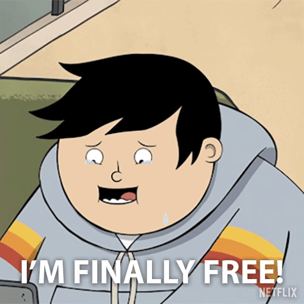

Projects

Knock Knock
Unity
C#
"Knock Knock" is a first-person psychological horror game proof of concept where you're alone in your apartment with mysterious visitors knocking at your door. Players must decide whether to open the door to safe characters or ignore dangerous "mimics" by using the peephole and analysing voice lines. The game creates tension through uncertainty and consequences for each decision. I got my friends to record some unique lines!
- Dynamic character management with randomised selection.
- Adaptive anxiety system with audio-based emotional state.
- Immersive door interaction with proximity-triggered mechanics.

Lights Out
Unity
C#
A text-based adventure game with branching narratives, player choices, and multiple endings.
- Branching dialogue system
- Save/load functionality
- Dynamic soundtrack